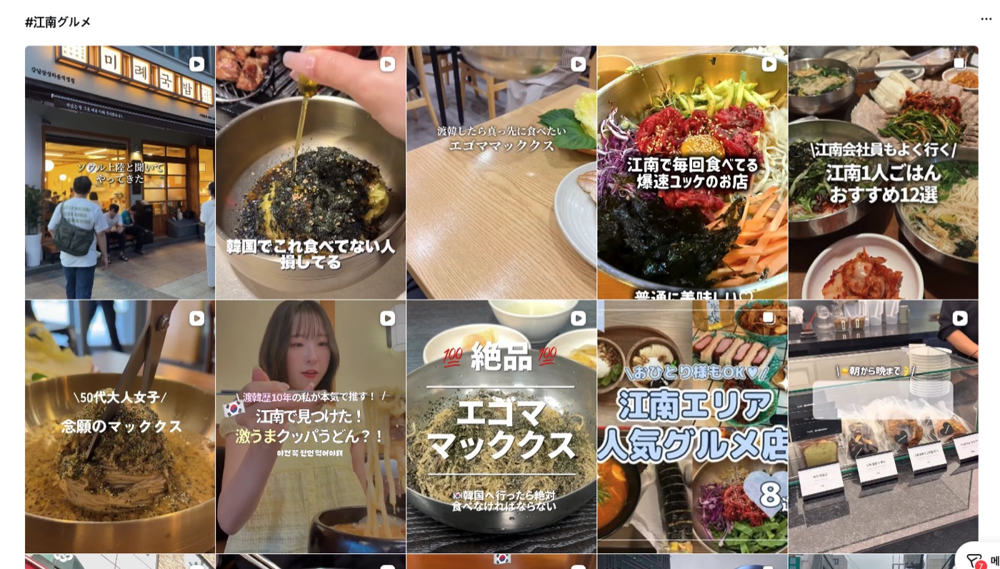
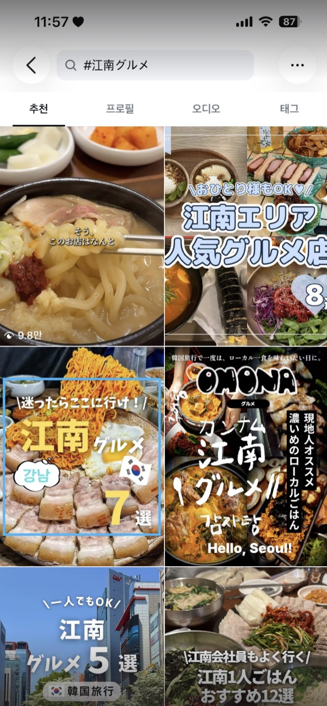
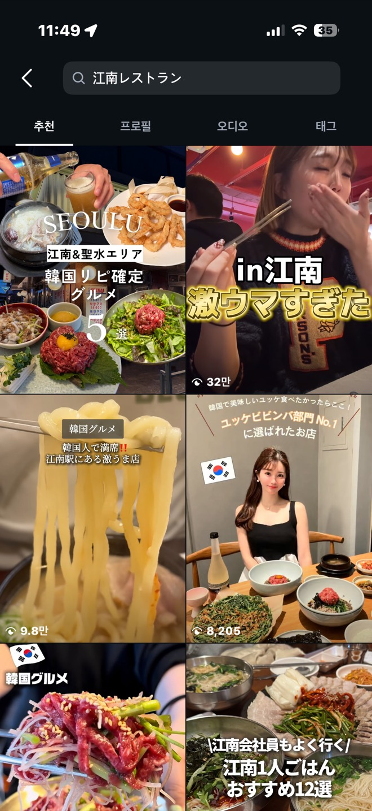

미례국밥 X 브랜드라이즈
미례국밥 8월 운영 보고서
한 줄 요약
4개 매장 방문 유입 합계가 64,528 → 98,494(+53%)로 올랐습니다. 강남은 "강남역 맛집" 38위 → 5위, 센텀은 광고 아닌 검색 유입 +36%, 전포는 예산 없이 +39% 회복, 부산시청점은 오픈 3주에 유입 10,490 · 리뷰 369건입니다. 8월 1순위였던 일본어 검색 선점도 확인됐습니다 — #江南グルメ(강남 맛집) 최상단에 강남점이 걸렸고, 일본 영상 저장이 4,055건(국내의 5배)입니다.
8월 한눈에 보기
4개 매장 유입 +53%
4개 매장 유입 합계 (월)
98,494
7월 64,528 → +53%
강남 방문 유입 (월)
38,163
7월 24,647 → +55%
센텀 검색 유입
13,223
7월 9,555 → +38%
"강남역 맛집" 순위
5위
7월 38위 (월 9.6만 검색)
7월엔 광고를 눌러 들어온 사람이 늘었습니다. 8월엔 검색해서 찾아온 사람이 늘었습니다(센텀 +36%). 인플루언서 영상이 지역에 깔리면 검색 유입이 따라 오릅니다.
다만 화력을 빼면 이 유입도 같이 내려갑니다. 8월 하순에 광고와 인플루언서 발행이 함께 비면서 지도 유입이 광고 이전 수준까지 내려왔습니다(3번).
다만 화력을 빼면 이 유입도 같이 내려갑니다. 8월 하순에 광고와 인플루언서 발행이 함께 비면서 지도 유입이 광고 이전 수준까지 내려왔습니다(3번).
8월 약속 × 결과
약속 7가지 · 초과 3 / 달성 4
| ① 강남 성수기 반등 | 초과 | 유입 +55%. "강남역 맛집" 38위 → 5위(월 9.6만 검색), "강남역 국밥" 1위. |
| ② 전포 하락 정지 | 초과 | 정지가 아니라 회복. 유입 +39%, "전포 맛집" 172위 → 64위. 전포에 쓴 추가 예산 0원. |
| ③ 센텀 인플루언서 6인 | 달성 | 약속 6인 → 7인 발행. 검색 유입 +38%. |
| ④ 부산시청점 오픈 | 달성 | 3주 만에 유입 10,490 · 리뷰 369건 · "부산시청국밥" 5위. |
| ⑤ 본사 광고 엔진 전환 | 달성 | 클릭 단가가 4개 매장 중 가장 낮았습니다. |
| ⑥ 인스타 도달 유지 | 달성 | 목표 30만 대비 38.4만. 다만 7월(51만)보다는 내려왔습니다(9번). |
| ⑦ 강남 일본 검색 선점 8월 1순위 |
초과 | #江南グルメ 최상단에 강남점 노출 · 일본어 검색어 8개에서 확인. 영상 조회 137,583 · 저장 4,055건(국내 인플루언서의 5배). |
센텀점 — 광고 없이 찾아온 사람이 늘었습니다
인플루언서 7인 배치 · 8월 실측
월 방문 유입
30,948
7월 26,315 → +18%
네이버지도
8,895
7월 6,547 → +36%
네이버검색
4,328
7월 3,008 → +44%
리뷰 등록 (월)
390건
7월 358건 → +9%
7월 보고서에서 "광고 클릭만 늘었고 검색 유입은 그대로"라고 말씀드렸습니다. 인플루언서 7인을 붙이자 그 숫자가 6,547 → 8,895로 올랐습니다.
| 센텀 주차 | 광고비 | 네이버지도 | 인플루언서 발행 |
|---|---|---|---|
| 7/21 — 7/27 | 806,137 | 2,042 | — |
| 7/28 — 8/03 | 511,819 | 2,310 | — |
| 8/04 — 8/10 | 168,203 | 2,486 | 윤구르르르(8/2) · 푸드브랜더(8/7) · 최슬아(8/10 · 9.0만 조회) |
| 8/11 — 8/17 | 263,319 | 2,539 | 망개호박고구마(8/13) |
| 8/18 — 8/24 | 165,907 | 2,017 | 먹따롱 · 전국구땡구(8/21) · 소희로그(8/23) |
| 8/25 — 8/31 | 232,031 | 1,853 | 발행 없음 |
화력을 틀 때와 안 틀 때의 차이는 분명합니다. 센텀 광고가 없던 7월 초 지도 유입은 주 1,383~1,691이었고, 광고를 집행한 7/14~8/31 평균은 2,097(+36%)입니다.
그런데 8월 하순에 1,853까지 내려왔습니다 — 광고를 안 틀던 7월 초 수준에 가까워진 겁니다. 같은 시기에 광고비도 줄었고 인플루언서 발행도 끊겼습니다(8/23 이후 발행 없음). 둘 중 무엇 때문인지는 지금 데이터로 나눠지지 않습니다 — 두 가지가 같이 움직였기 때문입니다.
확실한 건 화력을 빼면 지도 유입이 광고 이전 수준으로 돌아간다는 것입니다. 그래서 9월엔 광고와 발행을 끊기지 않게 이어 붙입니다.
그런데 8월 하순에 1,853까지 내려왔습니다 — 광고를 안 틀던 7월 초 수준에 가까워진 겁니다. 같은 시기에 광고비도 줄었고 인플루언서 발행도 끊겼습니다(8/23 이후 발행 없음). 둘 중 무엇 때문인지는 지금 데이터로 나눠지지 않습니다 — 두 가지가 같이 움직였기 때문입니다.
확실한 건 화력을 빼면 지도 유입이 광고 이전 수준으로 돌아간다는 것입니다. 그래서 9월엔 광고와 발행을 끊기지 않게 이어 붙입니다.
| 센텀 인플루언서 (8월 7인 발행) | 팔로워 | 조회수 | 좋아요 | 저장 |
|---|---|---|---|---|
| 최슬아 | 7만 | 90,193 | 628 | 268 |
| 망개호박고구마 | 1만 | 4,849 | 82 | 12 |
| 윤구르르르 | 7,997 | 3,718 | 105 | 11 |
| 푸드브랜더 · 소희로그 · 먹따롱 · 전국구땡구 | — | 발행 완료 · 조회수 집계 수집 중 (9월 첫 주 보완) | ||
약속한 6인을 넘겨 7인이 발행했고, 그중 최슬아 한 편이 90,193 조회로 센텀 유입 상승을 끌었습니다. 나머지 4인은 발행은 됐으나 조회수 집계가 아직 안 들어와, 9월 첫 주에 채워 다시 공유드리겠습니다.
안 된 것 2가지 — "센텀 맛집"이 3위 → 6위로 내려왔고(검색량은 늘어 경쟁이 셈), "해운대돼지국밥"은 49위 → 54위로 제자리입니다. 핀 반경 밖의 광역 키워드라 지역 광고로는 잘 움직이지 않는 자리로, 9월은 센텀 반경 키워드에 집중합니다.
강남점 — "국밥집"에서 "강남 밥집"이 됐습니다
오픈 3개월차 · 성수기 화력 1,000만 결과
월 방문 유입
38,163
7월 24,647 → +55%
네이버지도
25,196
7월 19,781 → +27%
리뷰 등록 (월)
640건
체험단 40인 → 20인 축소 반영
"강남역 맛집"
5위
7월 38위 → 5위
| 키워드 | 월 검색량 | 7월말 | 8월말 |
|---|---|---|---|
| 강남역 맛집 | 96,200 | 38위 | 5위 |
| 강남역 한식 | 2,590 | 14위 | 3위 |
| 강남역 한식 맛집 | 1,320 | 14위 | 3위 |
| 강남역 국밥 | 1,430 | 2위 | 1위 |
| 강남삼성타운맛집 | 50 | 13위 | 1위 |
| 강남역 돼지국밥 | 130 | 1위 | 1위 |
| 돼지국밥 (전국) | 66,650 | 114위 | 104위 |
| 강남 국내 인플루언서 (8월) | 팔로워 | 조회수 | 좋아요 | 저장 | 공유 |
|---|---|---|---|---|---|
| 맛집감 | 2만 | 18,031 | 115 | 56 | 107 |
| 세로본능 | 1,174 | 11,349 | 173 | 100 | 350 |
| 취향백서 | 5,257 | 4,924 | 50 | 47 | 31 |
| 슬립디쉬 | 3.7만 | 8/26 발행 · 집계 수집 중 | |||
팔로워가 작아도 잘 터집니다. 세로본능은 팔로워 1,174명인데 조회 11,349 · 공유 350이 나왔습니다. 팔로워 수보다 영상이 얼마나 퍼지느냐가 중요하다는 뜻이라, 9월 섭외도 팔로워 규모보다 반응률을 기준으로 잡겠습니다.
7월까지는 "돼지국밥"을 찾는 사람에게만 떴습니다. 8월부터는 그냥 강남에서 밥 먹을 곳을 찾는 사람에게도 뜹니다. 유입 +55%가 여기서 나왔습니다.
전포본점 — 돈을 더 안 썼는데 회복했습니다
7월 유일한 미달 지표 · 8월 반전
전포 방문 유입 (월)
회복
18,893
← 13,566
+39%
6월 고점(18,823) 수준 회복
네이버지도 +41%
네이버검색 +33%
리뷰 등록 134 → 204건
네이버검색 +33%
리뷰 등록 134 → 204건
키워드 순위
반등
64위
← 172위
"전포 맛집"
8월 둘째 주엔 20위까지
전포역맛집 118위 → 40위
서면전포맛집 89위 → 58위
전포 미례국밥 1위 사수
서면전포맛집 89위 → 58위
전포 미례국밥 1위 사수
전포에 쓴 돈은 7월과 똑같이 플레이스 관리 40만뿐입니다. 달라진 건 8월에 새로 만든 본사 브랜드 광고 하나입니다. 브랜드 광고를 보고 검색한 사람이 부산에선 전포로 온 것으로 봅니다(직접 측정은 안 됩니다).
단, 전포도 광고를 끄면 같이 내려갑니다. 본사 광고가 계속 돌아간다는 전제 위의 회복입니다. 9월에도 본사 광고를 그대로 유지해 이 회복을 지킵니다.
단, 전포도 광고를 끄면 같이 내려갑니다. 본사 광고가 계속 돌아간다는 전제 위의 회복입니다. 9월에도 본사 광고를 그대로 유지해 이 회복을 지킵니다.
부산시청점 — 오픈 3주 만에 자리를 잡았습니다
표준 오픈 패키지 1호 · 셋업 300만
플레이스 유입 (3주)
10,490
주 1,874 → 4,839
리뷰 등록
369건
체험단 40인 모집 완료
인플루언서
4인
전원 발행 완료
"부산시청국밥"
5위
2주 만에 17위 → 5위
| 키워드 | 월 검색량 | 3주차 | 4주차 |
|---|---|---|---|
| 부산시청국밥 | 650 | 17위 | 5위 |
| 부산시청역맛집 | 1,450 | 78위 | 16위 |
| 연제구 돼지국밥 | 70 | 17위 | 13위 |
| 부산시청점심 | 750 | 55위 | 49위 |
매장마다 새로 기획하지 않고 정해진 세트를 그대로 적용한 첫 사례입니다. 이 결과를 근거로 9월 울산삼산점을 같은 방식으로 엽니다.
메타 광고 — 6% 적게 쓰고 같은 클릭
8/1 ~ 8/31 실측
총 집행
241만
7월 대비 적게 쓰고 같은 클릭
링크 클릭
40,070
7월 40,195 → 동일
클릭당 비용
60원
7월 대비 내려갔습니다
클릭률
6.15%
업계 평균 1.67%
| 구분 | 링크 클릭 | 가게 정보 도착 | 도착률 |
|---|---|---|---|
| 센텀점 | 16,870 | 14,806 | 87.8% |
| 부산시청점 | 4,234 | 3,661 | 86.5% |
| 강남점 플레이스로 보낸 광고 | 6,738 | 5,854 | 86.9% |
| 본사 · 강남 일부 프로필로 보낸 광고 | 12,228 | 프로필로 보낸 광고는 '도착'이 잡히지 않습니다 · 본사는 도달 85,044명, 클릭 단가는 4개 매장 중 가장 낮았습니다 | |
8월 플랜에서 광고 판단 기준을 "클릭당 얼마"에서 "가게 정보까지 도착시키는 데 얼마"로 바꾸겠다고 말씀드렸고, 그 숫자입니다.
센텀 도착 단가가 7월 대비 31% 내려갔습니다. 도착률 87.8%로, 광고를 누른 사람 10명 중 9명이 실제로 가게 정보까지 갑니다. 부산시청점도 86.5%로 같은 수준입니다.
강남은 상권 경쟁이 세서 클릭 자체가 비쌉니다. 다만 도착률은 86.9%로 센텀과 같습니다 — 비싸게 산 클릭도 똑같이 매장까지 도착합니다.
센텀 도착 단가가 7월 대비 31% 내려갔습니다. 도착률 87.8%로, 광고를 누른 사람 10명 중 9명이 실제로 가게 정보까지 갑니다. 부산시청점도 86.5%로 같은 수준입니다.
강남은 상권 경쟁이 세서 클릭 자체가 비쌉니다. 다만 도착률은 86.9%로 센텀과 같습니다 — 비싸게 산 클릭도 똑같이 매장까지 도착합니다.
새로 만드는 것보다 잘 된 걸 다시 트는 게 쌉니다. 본사는 반응 확인된 영상만 다시 돌려 클릭 단가가 4개 매장 중 가장 낮았습니다. 9월에도 이 방식으로 갑니다.
강남 평일 vs 주말 — 8월 플랜에서 "주말 호텔 손님 쪽이 확실히 좋으면 9월엔 주말 집중으로 돌린다"고 했는데, 차이가 없었습니다 (도착 단가 거의 동일 · 일평균 도착 276 vs 285). 주말로 몰 근거가 없어 9월에도 상시로 갑니다.
강남 평일 vs 주말 — 8월 플랜에서 "주말 호텔 손님 쪽이 확실히 좋으면 9월엔 주말 집중으로 돌린다"고 했는데, 차이가 없었습니다 (도착 단가 거의 동일 · 일평균 도착 276 vs 285). 주말로 몰 근거가 없어 9월에도 상시로 갑니다.
강남 일본 트랙 — 일본어 주요 검색어에 상위 노출되고 있습니다
8월 1순위 목표 · 일본 인플루언서 8인 500만
일본 영상 조회수
137,583
업로드 5편 합계
저장
4,055건
국내 인플루언서 203건의 20배
저장률
2.95%
국내 0.59% → 5배
일본어 검색 노출
상위
#江南グルメ 최상단 · 주요 검색어 다수
일본인이 실제로 쓰는 주요 검색어에서, 미례국밥 콘텐츠가 상위에 노출되고 있습니다.
8월 1순위 목표였던 "일본어로 검색했을 때 우리가 뜨는가"에 답이 나왔습니다. 특히 #江南グルメ(강남 맛집)에서는 강남점 매장 외관이 최상단 첫 칸에 걸려 있습니다.
8월 1순위 목표였던 "일본어로 검색했을 때 우리가 뜨는가"에 답이 나왔습니다. 특히 #江南グルメ(강남 맛집)에서는 강남점 매장 외관이 최상단 첫 칸에 걸려 있습니다.
| 상위 노출 확인된 일본어 검색어 | 뜻 | 노출 형태 |
|---|---|---|
| #江南グルメ | 강남 맛집 | 최상단 첫 칸 — 강남점 매장 외관 |
| #韓国グルメ | 한국 맛집 | 상단 — "강남에서 발견! 엄청 맛있는 국밥우동?!" |
| #江南レストラン | 강남 레스토랑 | 상단 — "한국인으로 만석!! 강남역 맛집" |

#江南グルメ (강남 맛집) — 검색 결과 최상단 첫 칸에 강남점 매장 외관이 그대로 노출됩니다. 캡션은 "서울 상륙했다고 해서 왔다".

#江南グルメ (강남 맛집) — 같은 검색어 상단의 돼지우동 클로즈업 · 조회 9.8만.

#江南レストラン (강남 레스토랑) — "한국인으로 만석‼️ 강남역에 있는 엄청 맛있는 집".

#韓国グルメ (한국 맛집) — 오른쪽에 "강남에서 발견! 엄청 맛있는 국밥우동?!", 그 왼쪽은 일본 인플루언서 URITRIP의 큐레이션 게시물입니다.

#韓国グルメ (한국 맛집) — "평일 밤 8시인데 놀랍게도 만석" 등 매장 혼잡도를 보여주는 컷이 함께 잡힙니다.
이 밖에 #江南ひとりごはん(강남 혼밥) · #韓国でひとりごはん(한국에서 혼밥) · #韓国一人旅(한국 혼행) · #韓国旅行(한국 여행) · #ソウルグルメ(서울 맛집) 계열에서도 노출이 확인됩니다.
돼지우동이 일본어 검색과 잘 맞습니다. "혼밥(ひとりごはん)"으로 찾는 여행객에게는 혼자 들어가 한 그릇 먹고 나올 수 있는 집이 필요한데, 국밥이 정확히 그 자리입니다.
돼지우동이 일본어 검색과 잘 맞습니다. "혼밥(ひとりごはん)"으로 찾는 여행객에게는 혼자 들어가 한 그릇 먹고 나올 수 있는 집이 필요한데, 국밥이 정확히 그 자리입니다.
| 일본 인플루언서 | 팔로워 | 조회수 | 좋아요 | 저장 | 공유 |
|---|---|---|---|---|---|
| URITRIP | 2.7만 | 84,573 | 1,800 | 3,300 | 350 |
| touta_momo | 4,987 | 20,857 | 151 | 72 | 3 |
| Eri | 9,255 | 15,297 | 142 | 213 | 21 |
| jennie | 1만 | 12,174 | 157 | 383 | 9 |
| Moa | 8,107 | 4,682 | 48 | 87 | 19 |
| 합계 (5편) | — | 137,583 | 2,298 | 4,055 | 402 |
저장이 압도적입니다. 일본 영상은 본 사람 100명 중 3명이 저장했습니다(국내 인플루언서는 0.6명). 여행객은 "한국 가면 여기 가야지" 하고 담아두기 때문입니다. 돋보기 콘텐츠에서 확인한 것과 같습니다 — 좋아요는 스쳐 간 사람, 저장은 갈 마음이 있는 사람입니다.
URITRIP 한 편은 팔로워(2.7만)의 3.1배인 8.5만 조회가 나왔습니다. 팔로워 밖으로 퍼졌다는 뜻이고, 이게 검색에 잡히는 이유입니다.
URITRIP 한 편은 팔로워(2.7만)의 3.1배인 8.5만 조회가 나왔습니다. 팔로워 밖으로 퍼졌다는 뜻이고, 이게 검색에 잡히는 이유입니다.
8월에는 광고를 1편만 집행했습니다 — 의도한 순서입니다.
일본 인플루언서는 방한 일정에 맞춰 섭외하다 보니 발행이 8월 하순에 몰렸습니다. 그래서 광고부터 붙이지 않고, 광고 없이 영상 자체가 얼마나 퍼지는지(오가닉)를 먼저 확인했습니다. 광고를 처음부터 태우면 그 성과가 영상이 좋아서인지 광고비 때문인지 구분되지 않기 때문입니다.
결과는 위 숫자입니다 — 광고 없이 조회 137,583 · 저장 4,055건, URITRIP 한 편은 팔로워의 3.1배까지 퍼졌습니다. 영상 자체의 힘이 확인됐으니, 이제 광고를 붙일 차례입니다.
그래서 9월 일본 트랙 200만은 신규 3인을 붙이고, 검증된 소재에 광고를 제대로 태우는 데 씁니다.
일본 인플루언서는 방한 일정에 맞춰 섭외하다 보니 발행이 8월 하순에 몰렸습니다. 그래서 광고부터 붙이지 않고, 광고 없이 영상 자체가 얼마나 퍼지는지(오가닉)를 먼저 확인했습니다. 광고를 처음부터 태우면 그 성과가 영상이 좋아서인지 광고비 때문인지 구분되지 않기 때문입니다.
결과는 위 숫자입니다 — 광고 없이 조회 137,583 · 저장 4,055건, URITRIP 한 편은 팔로워의 3.1배까지 퍼졌습니다. 영상 자체의 힘이 확인됐으니, 이제 광고를 붙일 차례입니다.
그래서 9월 일본 트랙 200만은 신규 3인을 붙이고, 검증된 소재에 광고를 제대로 태우는 데 씁니다.
콘텐츠 · 인스타그램
도달은 줄고, 반응은 늘었습니다
인스타 도달
38.4만
7월 51.0만 → -25%
인스타 반응
11,228
7월 7,395 → +52%
팔로워
459명
349 → 459 (+110)
인플루언서 발행
23인
센텀 7 · 강남 12 · 시청 4
7월엔 영상이 본사 계정 하나에 모여 전국에 떴습니다(도달 51만). 8월엔 같은 영상이 매장별로 흩어져 그 지역에만 떴습니다. 브랜드 도달은 줄지만 매장 유입은 +53%입니다. 실제로 갈 수 있는 사람에게만 보여준 결과라, 반응은 오히려 +52%입니다.
블로그 체험단 67건 발행(센텀 34 · 강남 19 · 시청 14)도 함께 나갔습니다.
블로그 체험단 67건 발행(센텀 34 · 강남 19 · 시청 14)도 함께 나갔습니다.
돋보기 콘텐츠 (강남점) — 예상 노출을 넘겼습니다
8/26 · 10개 계정 동시 발행 · 강남 8월 견적 300만 중
총 노출
166,241
예상 10만~20만 → 상단 도달
건당 평균 노출
16,624
10건 전부 예상 범위(1~2만) 안
반응 합계
892
좋아요 791 · 공유 40 · 리포스트 32 · 저장 25
게재 계정
10곳
팔로워 3.7만~11.9만 · 합 80.2만
| 콘텐츠 컨셉 | 건수 | 노출 | 좋아요 | 저장+리포스트 |
|---|---|---|---|---|
| ㄹㅇ 부산사람만 안다는 찐국밥 | 5 | 82,826 | 355 | 47 |
| 의외로 어울리는 음식 조합 ㄷㄷ | 5 | 83,415 | 436 | 10 |
노출은 두 컨셉이 같은데, 저장·리포스트가 4.7배 차이 납니다. "음식 조합"은 좋아요가 더 많지만 거기서 끝납니다. "부산사람만 아는 집" 쪽이 나중에 가보려고 저장하고, 친구에게 퍼 나르는 반응을 만들었습니다.
좋아요는 스쳐 지나간 사람이고 저장·리포스트는 갈 마음이 있는 사람입니다. 다음에 돋보기를 돌릴 땐 "현지인만 아는 집" 계열로 잡겠습니다.
좋아요는 스쳐 지나간 사람이고 저장·리포스트는 갈 마음이 있는 사람입니다. 다음에 돋보기를 돌릴 땐 "현지인만 아는 집" 계열로 잡겠습니다.
9월에 하는 것
총 1,560만 · 상세는 9월 운영 플랜
8월에 인플루언서 23인분의 영상이 쌓였고, 일본어 검색 선점도 확인됐습니다. 9월은 새로 만드는 달이 아니라 잘 된 걸 밀어주는 달입니다. 총액은 2,240 → 1,560만으로 내려가고, 그 안에서 울산삼산점이 문을 엽니다.